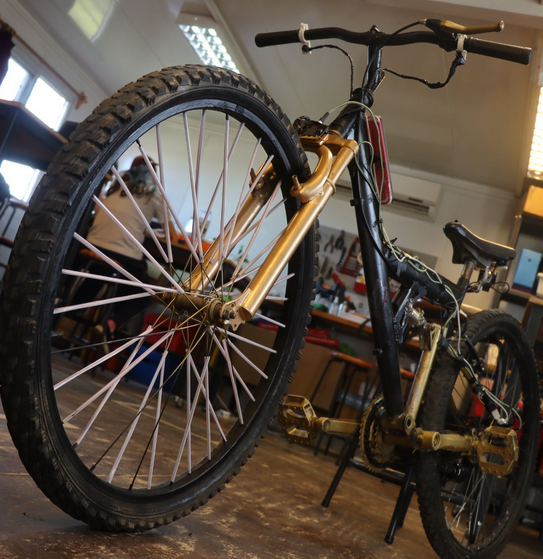

Proyecto: Golden Black
Bienvenidos a nuestra página, te contaremos de que se trata el proyecto Golden Black: bicicleta sustentable
Este proyecto fue realizado por estudiantes de 8° año del Liceo de Fray Marcos, en el marco de la 9° Olimpiada de Robótica, programación y videojuegos de Ceibal en 2022.
Los estudiantes diseñan y crean una bicicleta sustentable que mediante un dinamo es capaz de transformar la energía que se produce al andar en bici en energía eléctrica que se puede utilizar para cargar un celular y alimentar a placas micro:bit para cumplir la función de señaleros, luz de freno, baliza y foco de luz.